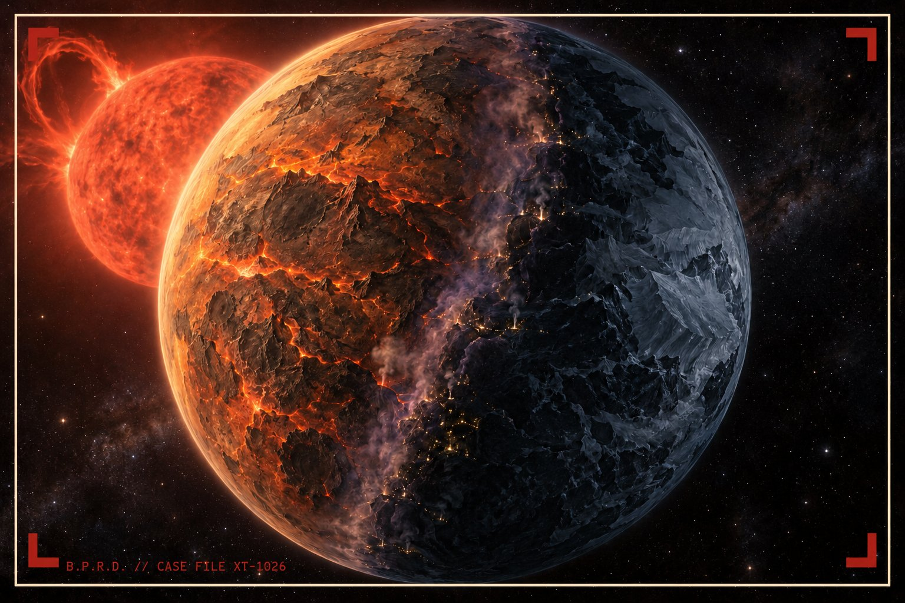

Page 9 of 15
Bureau for Paranormal Research and Defense — Extraterrestrial Division
Case File XT-1026: Classified Annex
Eyes Only • Field Office Toronto • Rev. 6
Section 1: Field Observations
Observation 1: The subject is technically very old
A year on Proxima b lasts about 11.2 Earth days. By Kethri reckoning, the subject has celebrated more than one thousand birthdays. He does not expect a cake for each of them, but he has not ruled it out.
Page 10 of 15
Section 1 (continued)
Observation 2: The subject enjoys Toronto winters
While human residents complain about the cold and the early darkness, the subject has been observed walking slowly through February evenings with visible contentment. Analysts believe the long nights remind him of home. One agent described his expression as “suspiciously peaceful.”
Observation 3: The subject rearranges rooms
Within about forty minutes of entering any shared space, the subject will have moved at least one chair, table, or lamp to improve how people move through the room. Classmates rarely notice the change. They only notice that the room now feels better, which is exactly how the Comfort Incident began.A
Page 11 of 15
Section 2: Survival Guide for Working With the Subject
Agents assigned to group projects with the subject must follow this procedure in order.
- Do not seat him beside a sunny window. He will slowly migrate to the darkest corner, taking the group’s whiteboard with him.
- Bring him problems, not solutions. He will redesign your solution regardless.
- Never call any work “good enough.” He regards the phrase as a formal challenge.
- If he begins sketching on any surface, including napkins and receipts, do not interrupt.
- Schedule meetings in the late evening, when he is at his sharpest.
- Keep him fed. He is surveying Earth cuisine and is noticeably more cooperative after dumplings.
- As a deadline approaches, provide one quiet, dimly lit room and one laptop. Then step back.
Page 12 of 15
Section 3: Greatest Weaknesses
Recorded here in case containment is ever required.
- Direct sunlight. Proxima Centauri is a dim red star. Earth’s Sun is, by comparison, extremely loud. The subject squints, slows down, and seeks shade.
- Badly designed objects. Doors that need a “PUSH” sign, forms that lose their contents, and remotes with forty identical buttons cause visible distress.
- His own work. He cannot stop improving things. This led to his exile, and he has not learned from it in the slightest.
- A truly comfortable chair. Once seated in one, he is very difficult to remove. The irony is not lost on the Kethri Council.
Page 13 of 15
Section 4: Future Ambitions
Unconfirmed. Three analysts, three theories, and they have not spoken since.
Theory A: Reconnaissance
Senior Agent ███: his digital media degree is cover for a full report on human interfaces, to be transmitted back to Proxima b.
Theory B: Redemption
Dr. ███, Xenopsychology: he hopes to design something so useful that the Kethri Council lifts his exile, proving good design can serve people without trapping them.
Theory C: He likes it here
The summer intern: he has made friends, found a favourite dumpling restaurant, and plans to keep making useful things for humans. Now gaining support.
Verdict: STILL UNDER ASSESSMENT. Next review after graduation.
Page 14 of 15
Section 5: Homeworld Reconstruction

Page 15 of 15
Section 6: External Intelligence
- The SETI Institute: humanity’s search for intelligent life. Looking in the right direction.
- Proxima Centauri b reference entry: notably incomplete.
Field Agent Notes
- The subject rearranged the Bureau’s own interview room during questioning. Productivity there has risen 30 percent. Nobody has moved the furniture back.